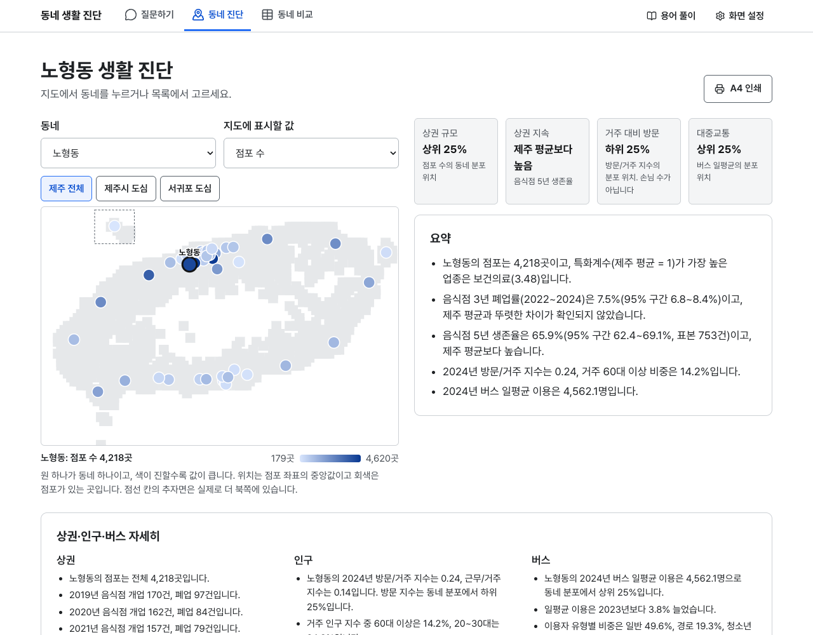
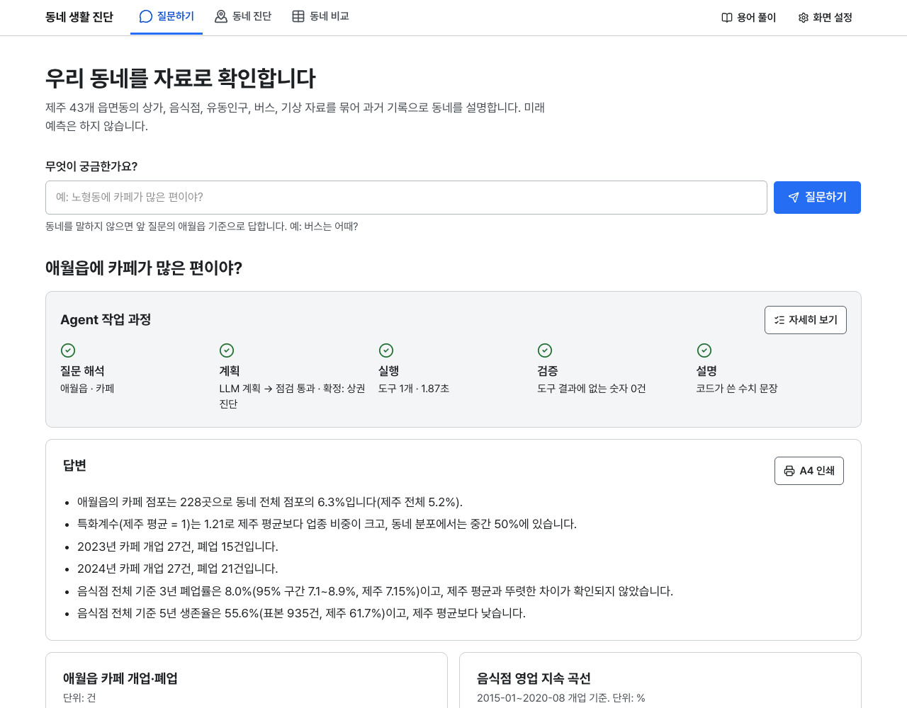

질문 하나로 우리 동네의 상권, 인구, 교통을 과거 기록으로 확인하는 AI Agent
제주 AI·빅데이터 활용 AI Agent 개발 챌린지 기획서
제주 도민이 창업 입지를 찾거나 이사할 때는 동네별 상권과 인구, 대중교통을 함께 살펴야 합니다. 제주데이터허브에 자료가 있지만, 데이터마다 지역 단위와 기간이 달라 비전문가가 직접 묶기 어렵습니다.
| 결합을 막는 장벽 | 이번 개발에서 확인한 사례 |
|---|---|
| 지역 단위가 다름 | 780 음식점은 법정동 주소, 583 유동인구는 읍면동, 743 버스는 정류소 이름 |
| 기간이 다름 | 793 상가는 2025-09 한 시점, 780은 2025-08까지의 이력, 743은 2025-10까지, 579 기상은 2025-03까지 |
| 이름이 바뀜 | 743 정류소 이름이 특정 날짜에 일괄 바뀜. 그대로 쓰면 정방동 버스 이용이 95.9% 늘어난 것처럼 보임 |
| 값의 뜻이 불명확 | 583 값은 API 문서에도 집계 단위 설명이 없음 |
목표: IT 비전문가 도민이 제주빅데이터센터 PC에서 평소 말로 묻고, 근거·기준 시점·한계가 붙은 답을 받게 합니다. 틀린 답을 그럴듯하게 내지 않는 것을 가장 중요한 품질 기준으로 둡니다. 그래서 예측값을 만들지 않고, 결합한 과거 기록과 그 한계를 함께 답합니다.
| 지표 | 높은 동네 | 낮은 동네 |
|---|---|---|
| 숙박 특화계수(제주 평균 = 1) | 한경면 3.23 | 이도2동 0.07 |
| 방문/거주 지수 | 예래동 1.95 | 동홍동 0.16 |
| 버스 이용자 중 경로 비중(2024) | 한경면 31.0% | 아라동 15.2% |
방문/거주 지수는 사람 수나 손님 수가 아니라 비율입니다.
| 사용자 | 상황 | 질문 예 |
|---|---|---|
| 예비 창업자 | 카페·음식점 입지 선택 | 애월읍에 카페가 많은 편이야? |
| 소상공인 | 주변 변화 확인 | 최근 2년 노형동 음식점 개업·폐업은? |
| 생활 도민 | 이사, 부모님 이동 | 한림읍 어르신 버스 이용은 어때? |
| 센터 상담 직원 | 방문 도민 응대 | 아라동과 이도2동 비교표 뽑아 줘 |
화면은 세 메뉴입니다. 질문하기는 사용자별 대표 질문과 입력창으로 묻고, 동네 진단은 지도에서 동네를 눌러 배지·차트를 보고 업종을 골라 창업 진단을 합니다. 동네 비교는 비교표를 만듭니다. 결과는 A4로 바로 인쇄합니다. 휴대폰 화면에서도 쓸 수 있고, 글자 크기와 선명한 화면을 고를 수 있습니다.

LLM은 질문을 보고 도구와 인자를 고릅니다. 계산과 수치 문장은 결정론적 코드로 만듭니다. 결정론적 코드란 입력이 같으면 항상 같은 결과를 내는 코드입니다.
계획에 문제가 있으면 점검 코드가 찾은 문제를 LLM에 알리고, LLM이 1회 다시 계획합니다. 실행이 실패해도 실패 내용을 알려 1회 다시 호출합니다. 그래도 빠진 호출만 기본 계획으로 채웁니다. 평가셋에서 qwen3:1.7b는 16문항 중 6건을 재계획했고, 끝내 코드로 채운 문항은 2건입니다.
처음에는 LLM이 답 전체를 쓰게 했습니다. 시험에서 "한림읍 어르신 일평균 1,474명"이라는 답이 나왔는데, 이 값은 전체 이용자 수였습니다. 이 숫자는 도구 결과에 있는 값이라 숫자 대조로는 잡히지 않았습니다. 그래서 수치 문장을 코드로만 만들도록 구조를 바꿨습니다.
| 경로 | 조건 | LLM이 하는 일 |
|---|---|---|
로컬 Ollama qwen3:1.7b(기본) | Ollama 실행 중. 모델 크기 1.4GB | 계획 |
Claude claude-opus-5-5(선택) | 환경 변수에 API 키가 있을 때 | 계획, 숫자 없는 요약 |
| LLM 없음 | 위 둘 다 없을 때 | 없음. 코드의 기본 계획으로 답함 |
| 도구 | 하는 일 | 데이터 |
|---|---|---|
| dong_profile | 상권·생존·인구·교통 요약, 배지 4개 | 793, 780, 583, 743+612 |
| biz_diagnostic | 업종 점포 수·특화계수, 음식점 개업·폐업·생존 | 793, 780 |
| population_mix | 방문·근무·거주 지수, 연령 구성, 비 오는 날 변화 | 583, 579 |
| bus_usage | 일평균 이용, 이용자 유형 비중, 증감, 비 오는 날 변화 | 743+612, 579 |
| compare_rank | 동네 비교표·순위. 폐업·생존은 순위 없음 | 표준 테이블 |
도구는 로컬 표준 테이블만 읽습니다. 앱이 호출하는 API는 선택한 LLM 경로뿐입니다(Ollama 로컬 API 또는 Claude API). 제주데이터허브 API는 표준 테이블을 만들 때만 호출하고, 실행 중에는 호출하지 않습니다.
| Agent가 스스로 함 | Agent가 할 수 없음 |
|---|---|
| 도구 선택, 지표 선택(질문 표현이 넓을 때), 실패 뒤 재계획 | SQL·코드 생성, 데이터 수정, 질문에 없는 업종·기간 사용, 기본 계획 밖 호출 2개 이상, 수치 문장 작성 |
범위 밖 질문(미래 예측, 매출·임대료, 시간대·실시간)은 이유와 함께 거절하고 답할 수 있는 질문을 제안합니다. 동네가 없거나 여러 행정동에 걸치면 되묻습니다.

| ID | 데이터 | 형식 | 사용 기간 | 만드는 지표 |
|---|---|---|---|---|
| 793 | 제주특별자치도 상가(상권) 정보 | 파일 | 2025-09 단면 | 점포 수, 업종 특화계수 |
| 780 | 제주특별자치도 음식점 목록(통합) | 파일 | 2025-08-30까지 이력 | 개업·폐업, 폐업률, 5년 생존율 |
| 583 | 읍면동 단위 내국인 유동인구 | API | 2023-11-04 – 2025-11-03(731일 반영) | 방문/거주, 근무/거주, 연령 구성 |
| 743 | 이용자 유형별 버스정류소 이용 인원 | 파일 | 2019-01 – 2025-10 | 일평균 이용, 경로·청소년 비중, 증감 |
| 612 | 버스 정류소 기본 정보 | API | 전량 | 정류소 → 행정동 연결 |
| 579 | 일별 기상 정보 | API | 2023-11-01 – 2025-03-30 | 강수일(1mm 이상) |
카드 소비 데이터는 동네 지표에 넣지 않았습니다. 597은 읍면동 단위가 없고 2018년까지이며, 502·504는 제주 전체 단위입니다. 동네 단위로 묶으면 없는 차이를 만들게 됩니다.
모든 데이터는 제주데이터허브(jejudatahub.net)에서 프로젝트 키로 받았습니다. 공개 메타데이터의 제공처는 제주데이터허브이며, 데이터별 이용 허락 유형 항목은 없습니다. 출처를 번호와 함께 표기하고, 원본 파일은 제출물에 넣지 않습니다. 표준 테이블에는 업소명 없이 동네 단위 집계만 담습니다.
| 항목 | 내용 |
|---|---|
| 대상 PC | Intel i7-8700, GTX 1060, RAM 32GB |
| 설치 | Python 3.9, scripts\setup_windows.bat(처음 1회) |
| 실행 | scripts\run_windows.bat 실행 후 브라우저에서 localhost 접속 |
| 데이터 | 표준 테이블을 함께 제공합니다. 실행 중 데이터 API를 호출하지 않습니다 |
| 의존 대상 | 없을 때 동작 |
|---|---|
Ollama와 모델 qwen3:1.7b | 코드의 기본 계획으로 답합니다 |
| Claude API(선택, 키 필요) | 키가 없으면 쓰지 않습니다. 호출 실패 시 요약 없이 답합니다 |
| 지도 배경 | 쓰지 않습니다. 점포 격자와 동네 원을 직접 그려 외부 요청이 없습니다(화면 시험에서 확인) |
| Python 패키지 설치 | 처음 1회 인터넷이 필요합니다 |
| 항목 | 결과 |
|---|---|
| 평가셋 21문항(기대값을 도구와 따로 계산) | LLM 없음 21/21, qwen3:1.7b 21/21, Claude 21/21(Q21 추가 전 측정) |
| 화면 자동 시험(개발 PC, 데스크톱·휴대폰 크기) | 대표 질문 9건의 수치·화면 요소, 지도 선택, 오류·로딩 화면, A4 인쇄, 접근성 검사 통과 |
| 설치 재현(개발 PC) | 제출 zip을 새 폴더에 풀어 새 가상환경에 설치하고 시험 통과 확인 |
| Windows 설치·실행(GitHub Actions windows-latest) | setup_windows.bat 설치, 단위 시험, 서버 실행·질문 응답 통과(2026-11-10) |
| 아직 못 한 것 | 센터 PC 실행과 응답 시간 측정 |
실행 중 LLM은 위 표와 같습니다. 개발에는 Anthropic Claude Code(구현)와 Google Gemini(설계·코드 교차 검토)를 썼습니다. 오픈소스는 Next.js, React, Tailwind CSS, shadcn/ui, Recharts, AnimateIcons, Pretendard, FastAPI, pandas, pyarrow, requests, anthropic SDK입니다. 화면 색과 크기는 KRDS(대한민국 정부 디자인 시스템) 디자인 토큰을 따랐습니다. 정부 사이트가 아닙니다. API 키는 환경 변수로만 받고 제출물에 넣지 않습니다.